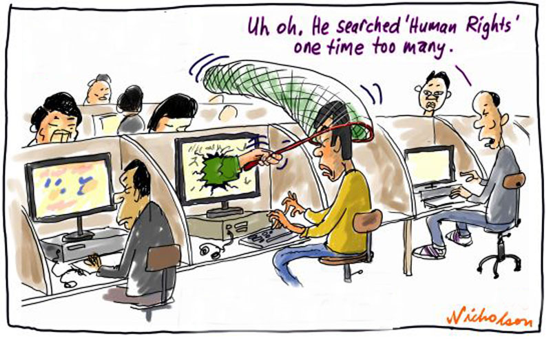

Ahmia - Search engine for Tor
Juha Nurmi, etunimi.sukunimi@ahmia.fi
PGP public key
Ahmia.fi- what is it?
- Search engine prototype for Tor network
- Collaboration with The Tor Project, EFF, Tor2web, Globaleaks and Hermes Center for Transparency and Digital Human Rights
- A search engine and a central hub for the anonymous ecosystem
- Made in Finland by Mikko and Juha
Why?
- We are supporting human rights and democracy
- Privacy is a human right
- Search engine is needed to find content form Tor network

Google Summer of Code 2014
Funding
- We need sustaining funding
- Workforce: 5000 euros per month (Mikko and Juha)
- Currently, we are working without sustaining funding
- Donations?
Infrastructure
- Front-end server is light: 512Mb RAM, 10GB HD, 2 CPU cores
- Large and powerful back-end is needed: our back-end is really scalable and we can run it as a P2P network of back-end computers
- Still, we need total of 100GB of RAM, 2TB of fast SSD, 20 CPU cores